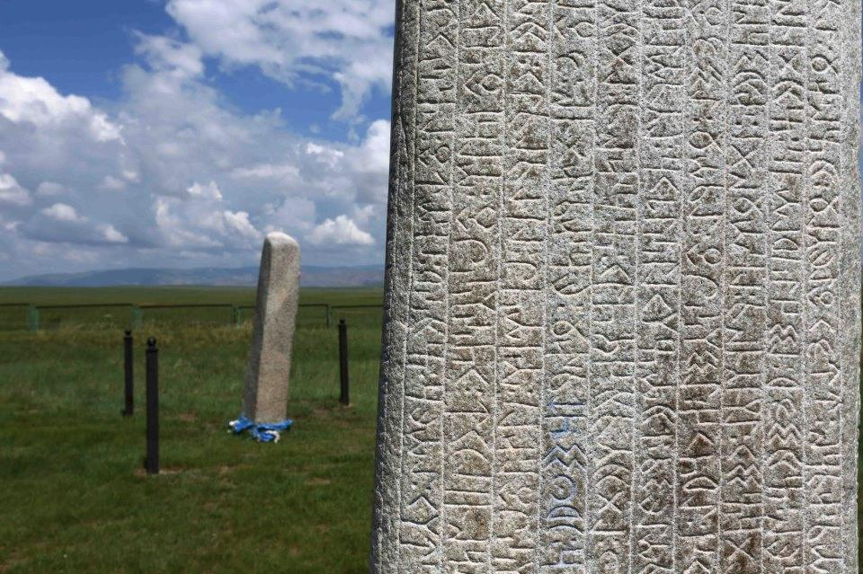

The Orkhon Inscriptions
A Glimpse into Ancient Turkic History
The Orkhon Inscriptions, also known as the Orkhon Script or Orkhon-Yenisey Script, are a collection of ancient inscriptions that provide valuable insights into the history and culture of the Turkic peoples. These inscriptions, dating back to the 8th century, were discovered in the Orkhon Valley, along the Orhkon river of Mongolia and have played a significant role in unraveling the mysteries of early Turkic civilizations.
Historical Significance
The Orkhon Inscriptions are considered one of the most important sources of information about the early Turkic peoples, shedding light on their language, social structures, and historical events. Inscribed on stone monuments known as "stele", these writings were erected by the Gök-Türks, a powerful Turkic Khaganate that dominated Central Asia during the 6th to 8th centuries.
Content and Script
The inscriptions are primarily written in the Turkic language using the Old Turkic Alphabet, which is an ancient Turkic runic alphabet. The script consists of angular and straight lines, arranged in vertical columns from top to bottom and read from right to left. The inscriptions cover a wide range of topics, including genealogy, political achievements, religious beliefs, and heroic epics of Turkic peoples.
Historical Context
The Orkhon Inscriptions provide invaluable historical evidence about the Göktürk Khaganate and its rulers. They document the rise and fall of various Göktürk leaders, their military campaigns, diplomatic relations, and interactions with neighboring civilizations, such as the Chinese Tang Dynasty. These inscriptions offer a unique perspective on the political and cultural dynamics of the time, helping scholars reconstruct the complex tapestry of early Turkic history.
Cultural and Linguistic Insights
Beyond their historical significance, the Orkhon Inscriptions offer profound insights into the cultural and linguistic aspects of the Turkic peoples. They reveal the early Turkic worldview, religious practices, and societal values. Through the decipherment of these inscriptions, scholars have made significant progress in understanding the development of the Turkic languages and their connections to other language families.
Preservation and UNESCO Recognition
Recognizing their exceptional value, the Orkhon Inscriptions were inscribed on the UNESCO World Heritage List in 2009. Efforts have been made to preserve these ancient artifacts and promote their study. Researchers and linguists continue to explore the inscriptions, delving deeper into the rich heritage of the Turkic peoples and expanding our knowledge of their ancient civilizations.
Conclusion
The Orkhon Inscriptions stand as a testament to the vibrant history and cultural legacy of the Turkic peoples. These ancient writings provide a window into the past, enabling us to piece together the story of early Turkic civilizations and their enduring contributions to the world. The preservation and study of the Orkhon Inscriptions serve as a bridge between our modern understanding and the extraordinary heritage of the Turkic peoples.